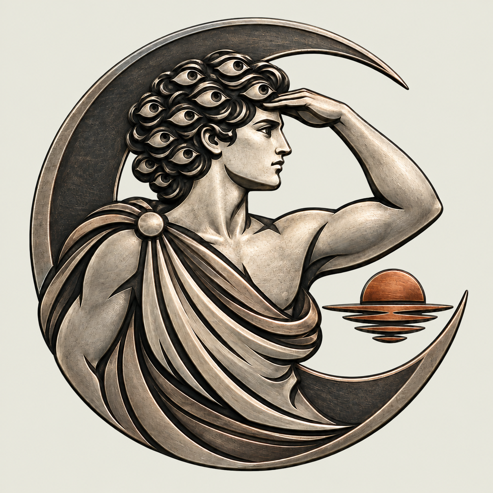

01 / SHALLOW RELIEF / REJECTED DIRECTION
A well-made object. The wrong register.
The relief has controlled texture and strong physical presence, but the circular disk, metallic body and costume produce a Greco-Roman coin. Its material overstates the mythology and can turn the family into a mascot.